AntiSamyXSS介绍AntiSamy介绍AntiSamy入门案例演示xss攻击第一步：创建工程antiSamy_demo第二步：编写实体类Student第三步：编写StudentController第四步：编写样式表form.css第五步：编写样式表link.css第六步：编写样式表table.css第七步：添加vue和axios库第八步：编写index.html第九步：编写show.html第十步：编写save.html第十一步：启动程序第十二步：访问第十三步：初始化数据第十四步：查看所有学生的信息第十五步：添加学生信息十六步：查询所有学生的信息解决xss攻击第一步：添加依赖第二步：创建策略文件/resources/antisamy.xml第三步：创建过滤器，用于过滤所有提交到服务器的请求参数第四步：创建XssRequestWrapper类第五步：使上面定义的过滤器生效，创建配置类，用于初始化过滤器对象第六步：复制antisamy-ebay.xml文件到/resources目录下第七步：修改XssRequestWrapper类第八步：启动程序第九步：访问第十步：更改StudentController第十一步：编写save2.html第十二步：修改index.html第十三步：重启并访问第十四步：查看控制台日志第十五步：编写XssFilterService第十六步：修改StudentController第十七步：重启并访问第十八步：编写类XssStringJsonDeserializer第十九步：修改配置类AntiSamyConfig第二十步：修改StudentController第二十一步：重启并访问服务自定义spring boot starter开发starter第一步：初始化项目第二步：修改pom文件第三步：编写工具类XssUtils第四步：编写类XssRequestWrapper第五步：编写类XssStringJsonDeserializer 第六步：编写过滤器类XssFilter第七步：拷贝之前的service包到此项目中，并更改第八步：编写配置类XssAuthConfiguration第九步：拷贝antisamy-slashdot-1.4.4.xml文件和antisamy.xsd文件到资源目录中第十步：编写spring.factories文件使用starter第一步：导入tools-xss的依赖第二步：导入之前项目的静态资源文件第三步：拷贝antisamy-slashdot-1.4.4.xml文件和antisamy.xsd文件到资源目录中第四步：拷贝之前的controller和entity包到此项目中第五步：修改配置文件application.yml第六步：启动程序第七步：访问
AntiSamy
XSS介绍
XSS：跨站脚本攻击(Cross Site Scripting)，为不和 CSS混淆，故将跨站脚本攻击缩写为XSS。XSS是指恶意攻击者往Web页面里插入恶意Script代码，当用户浏览该页时，嵌入其中Web里面的Script代码会被执行，从而达到恶意攻击用户的目的。有点类似于sql注入。
XSS攻击原理：
HTML是一种超文本标记语言，通过将一些字符特殊地对待来区别文本和标记，例如，小于符号（<）被看作是HTML标签的开始，
AntiSamy介绍
AntiSamy是OWASP的一个开源项目，通过对用户输入的 HTML / CSS / JavaScript 等内容进行检验和清理，确保输入符合应用规范。AntiSamy被广泛应用于Web服务对存储型和反射型XSS的防御中。
AntiSamy的maven坐标：
51<dependency>2 <groupId>org.owasp.antisamy</groupId>3 <artifactId>antisamy</artifactId>4 <version>1.5.7</version>5</dependency>
AntiSamy入门案例
演示xss攻击
第一步：创建工程antiSamy_demo
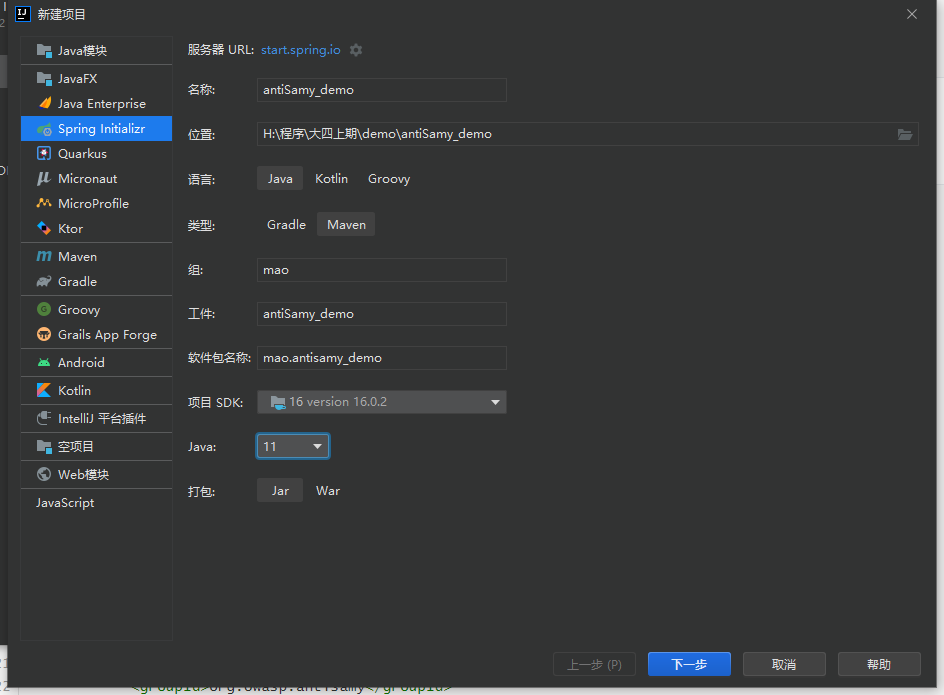
第二步：编写实体类Student
1511package mao.antisamy_demo.entity;2
3/**4 * Project name(项目名称)：antiSamy_demo5 * Package(包名): mao.antisamy_demo.entity6 * Class(类名): Student7 * Author(作者）: mao8 * Author QQ：12961932459 * GitHub：https://github.com/maomao124/10 * Date(创建日期)： 2022/10/2911 * Time(创建时间)： 20:0112 * Version(版本): 1.013 * Description(描述)： 无14 */15
16
17public class Student18{19 /**20 * id21 */22 private long id;23 /**24 * 名字25 */26 private String name;27 /**28 * 性别29 */30 private String sex;31 /**32 * 年龄33 */34 private int age;35
36 /**37 * Instantiates a new Student.38 */39 public Student()40 {41 42 }43
44 /**45 * Instantiates a new Student.46 *47 * @param id the id48 * @param name the name49 * @param sex the sex50 * @param age the age51 */52 public Student(long id, String name, String sex, int age)53 {54 this.id = id;55 this.name = name;56 this.sex = sex;57 this.age = age;58 }59
60 /**61 * Gets id.62 *63 * @return the id64 */65 public long getId()66 {67 return id;68 }69
70 /**71 * Sets id.72 *73 * @param id the id74 */75 public void setId(long id)76 {77 this.id = id;78 }79
80 /**81 * Gets name.82 *83 * @return the name84 */85 public String getName()86 {87 return name;88 }89
90 /**91 * Sets name.92 *93 * @param name the name94 */95 public void setName(String name)96 {97 this.name = name;98 }99
100 /**101 * Gets sex.102 *103 * @return the sex104 */105 public String getSex()106 {107 return sex;108 }109
110 /**111 * Sets sex.112 *113 * @param sex the sex114 */115 public void setSex(String sex)116 {117 this.sex = sex;118 }119
120 /**121 * Gets age.122 *123 * @return the age124 */125 public int getAge()126 {127 return age;128 }129
130 /**131 * Sets age.132 *133 * @param age the age134 */135 public void setAge(int age)136 {137 this.age = age;138 }139
140 141 ("all")142 public String toString()143 {144 final StringBuilder stringbuilder = new StringBuilder();145 stringbuilder.append("id：").append(id).append('\n');146 stringbuilder.append("name：").append(name).append('\n');147 stringbuilder.append("sex：").append(sex).append('\n');148 stringbuilder.append("age：").append(age).append('\n');149 return stringbuilder.toString();150 }151}
第三步：编写StudentController
621package mao.antisamy_demo.controller;2
3import mao.antisamy_demo.entity.Student;4import org.apache.juli.logging.Log;5import org.slf4j.Logger;6import org.slf4j.LoggerFactory;7import org.springframework.web.bind.annotation.*;8
9import java.util.ArrayList;10import java.util.Collections;11import java.util.List;12
13/**14 * Project name(项目名称)：antiSamy_demo15 * Package(包名): mao.antisamy_demo.controller16 * Class(类名): StudentController17 * Author(作者）: mao18 * Author QQ：129619324519 * GitHub：https://github.com/maomao124/20 * Date(创建日期)： 2022/10/2921 * Time(创建时间)： 20:0522 * Version(版本): 1.023 * Description(描述)： 无24 */25
26("/student")28public class StudentController29{30 private static final List<Student> list = Collections.synchronizedList(new ArrayList<>());31
32 private static final Logger log = LoggerFactory.getLogger(StudentController.class);33
34 ("/init")35 public synchronized void init()36 {37 Student student1 = new Student(10001, "张三", "男", 18);38 Student student2 = new Student(10002, "李四", "女", 16);39 Student student3 = new Student(10003, "王五", "男", 20);40 list.clear();41 list.add(student1);42 list.add(student2);43 list.add(student3);44 log.info("初始化完成");45 }46
47 48 public boolean save( Student student)49 {50 list.add(student);51 log.info("添加成功：\n" + student);52 return true;53 }54
55 56 public List<Student> getAll()57 {58 log.info("查询所有：\n" + list);59 return list;60 }61
62}
第四步：编写样式表form.css
1041/*2 Project name(项目名称)：antiSamy_demo 3 File name(文件名): form4 Author(作者）: mao5 Author QQ：12961932456 GitHub：https://github.com/maomao124/7 Date(创建日期)： 2022/10/29 8 Time(创建时间)： 20:549 Version(版本): 1.010 Description(描述)： 无11 */12
13
14/*表单位置*/15div.form_position {16 position: absolute;17 top: 50%;18 left: 50%;19 transform: translate(-50%, -50%);20}21
22/*表单的边框*/23div.form {24 border: 10px skyblue dotted;25}26
27
28/*表*/29table {30 width: 600px;31 border-collapse: collapse;32 color: #4edaff;33 background-color: #ffe4da;34 transition: all 1s linear 0s;35}36
37table:hover {38 background-color: #b4ffab;39 /*width: 800px;*/40 /*transition: all 1s linear 0s;*/41}42
43
44/*设置字体*/45td, input, input.input {46 font-size: 30px;47}48
49input {50 /*font-size: 24px;*/51 /*width: 90%;*/52 color: coral;53}54
55input.input {56 width: 85%;57 color: coral;58 transition: all 0.5s linear 0s;59}60
61input.input:hover {62 width: 98%;63 transition: all 0.5s linear 0s;64 background-color: #fcffee;65}66
67
68/*设置提示*/69.prompt {70 text-align: center;71 width: 200px;72 transition: all 1s linear 0.2s;73}74
75.prompt:hover {76 transition: all 1s linear 0.2s;77 color: #ff2e2f;78}79
80/*提交按钮*/81input.submit {82 color: #6739ff;83}84
85input.submit:hover {86
87}88
89/*最上面的字*/90div.text {91 border: 10px violet dotted;92 text-align: center;93 font-size: 32px;94 color: tomato;95 background: bisque;96}97
98/*最上面的字的位置*/99div.text_position {100 position: absolute;101 top: 2%;102 left: 50%;103 transform: translate(-50%, 0%);104}
第五步：编写样式表link.css
771/*2 Project name(项目名称)：antiSamy_demo 3 File name(文件名): link4 Author(作者）: mao5 Author QQ：12961932456 GitHub：https://github.com/maomao124/7 Date(创建日期)： 2022/10/29 8 Time(创建时间)： 20:179 Version(版本): 1.010 Description(描述)： 无11 */12
13
14a {15 color: tomato;16 text-decoration: none;17 display: flex;18 justify-content: center;19 align-items: center;20
21 padding: 0;22 list-style-type: none;23 font-size: 22px;24 width: 10em;25 height: 2em;26 text-align: center;27 line-height: 2em;28 font-family: sans-serif;29 text-transform: capitalize;30 position: relative;31 margin: 0.8em;32}33
34/* 添加了左右两个圆点 */35a::before, a::after {36 content: '';37 position: absolute;38 width: 0.6em;39 height: 0.6em;40 background-color: gainsboro;41 top: calc(50% - 0.3em);42 border-radius: 50%;43 transition: 0.5s cubic-bezier(0.5, -0.5, 0.25, 1.5);44}45
46a::before {47 left: 0;48 z-index: -1;49}50
51a::after {52 right: 0;53 z-index: -2;54}55
56/* 添加悬浮效果 */57a:hover {58 color: deeppink;59}60
61/* 给前后伪元素添加悬浮效果，注意先后顺序，先是hover后是伪元素 */62a:hover::before, a:hover::after {63 width: 100%;64 height: 100%;65 border-radius: 0;66 background-color: dodgerblue;67}68
69a:hover::before {70 top: 0;71 left: -0.2em;72}73
74a:hover::after {75 right: -0.2em;76 filter: brightness(0.8);77}
第六步：编写样式表table.css
651/*2 Project name(项目名称)：antiSamy_demo 3 File name(文件名): table4 Author(作者）: mao5 Author QQ：12961932456 GitHub：https://github.com/maomao124/7 Date(创建日期)： 2022/10/29 8 Time(创建时间)： 20:339 Version(版本): 1.010 Description(描述)： 无11 */12
13
14table {15 width: 80%;16 background: #ccc;17 margin: 10px auto;18 /*border-collapse CSS 属性设置<table>内的单元格是否具有共享或单独的边框。*/19 /*collapse – 相邻单元格具有共享边框（折叠边框表格渲染模型）。*/20 border-collapse: collapse;21}22
23th, td {24 height: 25px;25 line-height: 25px;26 text-align: center;27 border: 1px solid #ccc;28 transition: all 0.4s linear 0s;29}30
31th {32 background: #eee;33 font-weight: normal;34}35
36tr {37 background: #fff;38 transition: all 2s linear 0s;39}40
41tr:hover {42 background: aqua;43 transition: all 0.4s linear 0s;44}45
46td:hover {47 color: magenta;48 transition: all 0.4s linear 0s;49}50
51td a {52 color: #06f;53 text-decoration: none;54}55
56td a:hover {57 color: #06f;58 text-decoration: underline;59 /*transition: all 1s linear 0s;*/60}61
62caption {63 color: #28ffc7;64 font-size: 28px;65}
第七步：添加vue和axios库

cdn：
11<script src="https://cdn.jsdelivr.net/npm/axios/dist/axios.min.js"></script>
11<script src="https://cdn.bootcss.com/vue/2.5.2/vue.min.js"></script>
第八步：编写index.html
781
3<!--4Project name(项目名称)：antiSamy_demo5 File name(文件名): index6 Authors(作者）: mao7 Author QQ：12961932458 GitHub：https://github.com/maomao124/9 Date(创建日期)： 2022/10/2910 Time(创建时间)： 20:0311 Description(描述)： 无12-->13
14<html lang="en">15<head>16 <meta charset="UTF-8">17 <title>索引</title>18 <link rel="stylesheet" href="/css/link.css">19 <script src="/js/axios.js"></script>20
21
22 <style>23 body {24 background-color: skyblue;25 }26
27 div.a {28 position: absolute;29 top: 50%;30 left: 50%;31 transform: translate(-50%, -50%);32 }33 </style>34</head>35<body>36
37<div class="a">38
39 <a href="/show.html">显示所有学生信息</a>40 <a href="/save.html">添加学生信息</a>41 <a href="" onclick="init()">初始化数据</a>42
43</div>44
45<script>46
47 function init()48 {49 //axios发起ajax请求50 axios({51 //请求的方式：52 method: "post",53 //请求的url:54 url: "/student/init",55 //url参数：56 params:57 {},58 //头信息：59 headers:60 {},61 //请求体参数：62 data:63 {},64 }).then(response =>65 {66 console.log(response);67 alert("初始化数据成功");68 }).catch(error =>69 {70 //console.log(error);71 alert("网络异常！");72 })73 }74
75</script>76
77</body>78</html>
第九步：编写show.html
841
3<!--4Project name(项目名称)：antiSamy_demo5 File name(文件名): show6 Authors(作者）: mao7 Author QQ：12961932458 GitHub：https://github.com/maomao124/9 Date(创建日期)： 2022/10/2910 Time(创建时间)： 20:2311 Description(描述)： 无12-->13
14<html lang="en">15<head>16 <meta charset="UTF-8">17 <title>Title</title>18 <link rel="stylesheet" href="/css/table.css">19 <script src="/js/axios.js"></script>20 <script src="/js/vue.js"></script>21</head>22<body>23
24<div id="app">25
26 <table>27 <tr>28 <th>学号</th>29 <th>姓名</th>30 <th>性别</th>31 <th>年龄</th>32 </tr>33 <tr v-for="student in studentList">34 <td v-html="student.id"></td>35 <td v-html="student.name"></td>36 <td v-html="student.sex"></td>37 <td v-html="student.age"></td>38 </tr>39 </table>40
41</div>42
43</body>44
45<script>46
47 var app = new Vue({48 el: "#app",49 data: {50 studentList: null51 },52 method: {},53 mounted: function ()54 {55 //axios发起ajax请求56 axios({57 //请求的方式：58 method: "get",59 //请求的url:60 url: "/student",61 //url参数：62 params:63 {},64 //头信息：65 headers:66 {},67 //请求体参数：68 data:69 {},70 }).then(response =>71 {72 console.log(response);73 this.studentList = response.data;74
75 }).catch(error =>76 {77 //console.log(error);78 alert("网络异常！");79 })80 }81 })82
83</script>84</html>
第十步：编写save.html
1531
3<!--4Project name(项目名称)：antiSamy_demo5 File name(文件名): save6 Authors(作者）: mao7 Author QQ：12961932458 GitHub：https://github.com/maomao124/9 Date(创建日期)： 2022/10/2910 Time(创建时间)： 20:2311 Description(描述)： 无12-->13
14<html lang="en">15<head>16 <meta charset="UTF-8">17 <title>Title</title>18 <link rel="stylesheet" href="css/form.css">19 <script src="js/axios.js"></script>20 <script src="js/vue.js"></script>21 <style>22 body {23 background-color: skyblue;24 }25 </style>26</head>27<body>28
29<div id="app">30
31
32 <div class="form_position">33 <div class="animated bounceInDown">34 <div class="form">35 <form action="" method="post">36 <table border="1">37 <tr>38 <td colspan="2" align="center">39 </td>40 </tr>41 <tr>42 <td class="prompt">学生学号</td>43 <td>44 <label>45 <input v-model="student.id" class="input" type="number" name="id">46 </label>47 </td>48 </tr>49 <tr>50 <td class="prompt">学生姓名</td>51 <td>52 <label>53 <input v-model="student.name" class="input" type="text" name="name">54 </label>55 </td>56 </tr>57 <tr>58 <td class="prompt">学生性别</td>59 <td>60 <label>61 <input v-model="student.sex" class="input" type="text" name="sex">62 </label>63 </td>64 </tr>65 <tr>66 <td class="prompt">学生年龄</td>67 <td>68 <label>69 <input v-model="student.age" class="input" type="number" name="age">70 </label>71 </td>72 </tr>73 <tr>74 <td colspan="2" align="center">75 <input @click="f()" class="submit" type="button" value="提交"/>76 </td>77 </tr>78 </table>79 </form>80 </div>81 </div>82 </div>83
84</div>85
86<!--<script>alert("xss攻击")</script>-->87<!--<h1>xss攻击</h1>-->88
89<script>90
91 var app = new Vue(92 {93 el: "#app",94 data: {95 student: {96 id: null,97 name: null,98 sex: null,99 age: null,100 }101 },102 methods: {103 f: function ()104 {105 console.log("提交")106 console.log(this.student)107 var that = this;108 //axios发起ajax请求109 axios({110 //请求的方式：111 method: "post",112 //请求的url:113 url: "/student",114 //url参数：115 params:116 {},117 //头信息：118 headers:119 {},120 //请求体参数：121 data:122 {123 id: that.student.id,124 name: that.student.name,125 sex: that.student.sex,126 age: that.student.age,127 },128 }).then(response =>129 {130 console.log(response);131 if (response.data === true)132 {133 alert("请求成功")134 }135 else136 {137 alert("失败")138 }139
140 }).catch(error =>141 {142 //console.log(error);143 alert("网络异常！");144 })145 }146 }147 }148 )149
150</script>151
152</body>153</html>
第十一步：启动程序
191
2 . ____ _ __ _ _3 /\\ / ___'_ __ _ _(_)_ __ __ _ \ \ \ \4( ( )\___ | '_ | '_| | '_ \/ _` | \ \ \ \5 \\/ ___)| |_)| | | | | || (_| | ) ) ) )6 ' |____| .__|_| |_|_| |_\__, | / / / /7 =========|_|==============|___/=/_/_/_/8 :: Spring Boot :: (v2.7.1)9
102022-10-30 13:14:22.269 INFO 17656 --- [ main] m.antisamy_demo.AntiSamyDemoApplication : Starting AntiSamyDemoApplication using Java 16.0.2 on mao with PID 17656 (H:\程序\大四上期\demo\antiSamy_demo\target\classes started by mao in H:\程序\大四上期\demo\antiSamy_demo)112022-10-30 13:14:22.271 INFO 17656 --- [ main] m.antisamy_demo.AntiSamyDemoApplication : No active profile set, falling back to 1 default profile: "default"122022-10-30 13:14:22.970 INFO 17656 --- [ main] o.s.b.w.embedded.tomcat.TomcatWebServer : Tomcat initialized with port(s): 8080 (http)132022-10-30 13:14:22.980 INFO 17656 --- [ main] o.apache.catalina.core.StandardService : Starting service [Tomcat]142022-10-30 13:14:22.980 INFO 17656 --- [ main] org.apache.catalina.core.StandardEngine : Starting Servlet engine: [Apache Tomcat/9.0.64]152022-10-30 13:14:23.057 INFO 17656 --- [ main] o.a.c.c.C.[Tomcat].[localhost].[/] : Initializing Spring embedded WebApplicationContext162022-10-30 13:14:23.057 INFO 17656 --- [ main] w.s.c.ServletWebServerApplicationContext : Root WebApplicationContext: initialization completed in 746 ms172022-10-30 13:14:23.198 INFO 17656 --- [ main] o.s.b.a.w.s.WelcomePageHandlerMapping : Adding welcome page: class path resource [static/index.html]182022-10-30 13:14:23.318 INFO 17656 --- [ main] o.s.b.w.embedded.tomcat.TomcatWebServer : Tomcat started on port(s): 8080 (http) with context path ''192022-10-30 13:14:23.328 INFO 17656 --- [ main] m.antisamy_demo.AntiSamyDemoApplication : Started AntiSamyDemoApplication in 1.355 seconds (JVM running for 2.735)
第十二步：访问

第十三步：初始化数据

第十四步：查看所有学生的信息
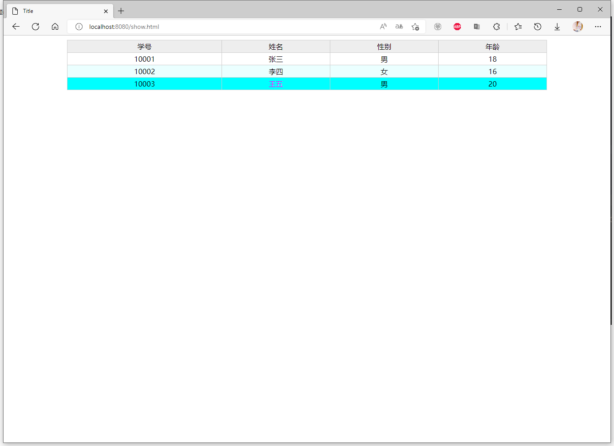
第十五步：添加学生信息

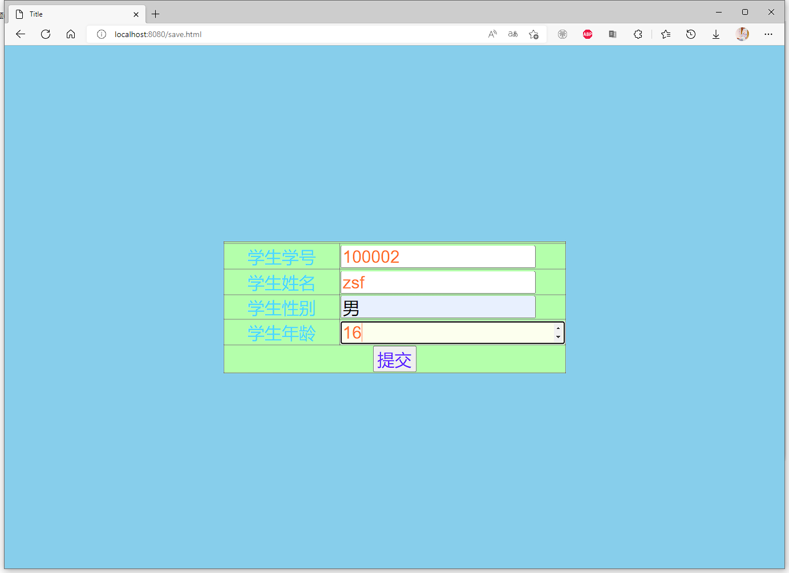

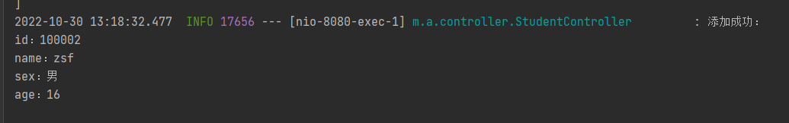


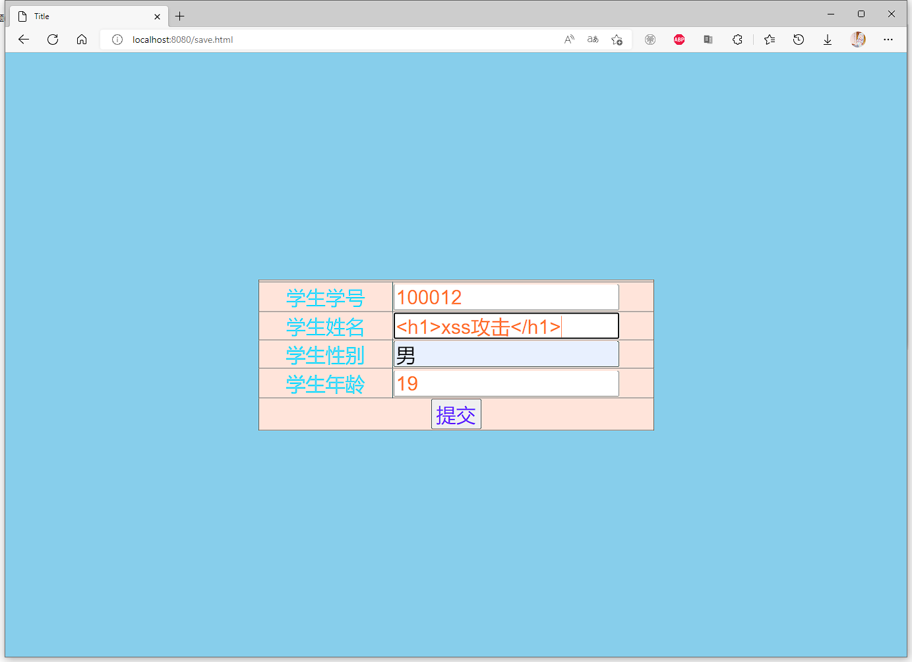

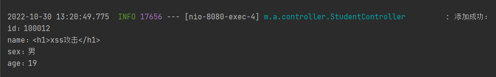
十六步：查询所有学生的信息
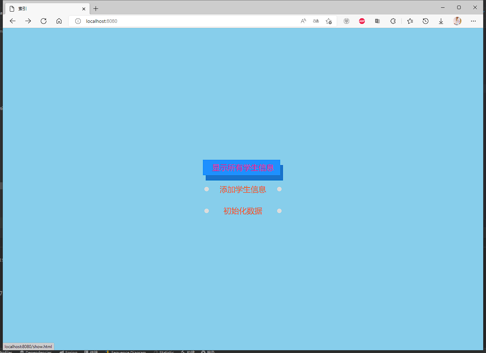

因为是浏览器的原因，浏览器直接把脚本拦截了，但是h1标签还在
数据接收是正常的


解决xss攻击
第一步：添加依赖
501 2<project xmlns="http://maven.apache.org/POM/4.0.0" xmlns:xsi="http://www.w3.org/2001/XMLSchema-instance"3 xsi:schemaLocation="http://maven.apache.org/POM/4.0.0 https://maven.apache.org/xsd/maven-4.0.0.xsd">4 <modelVersion>4.0.0</modelVersion>5 <parent>6 <groupId>org.springframework.boot</groupId>7 <artifactId>spring-boot-starter-parent</artifactId>8 <version>2.7.1</version>9 <relativePath/> <!-- lookup parent from repository -->10 </parent>11 <groupId>mao</groupId>12 <artifactId>antiSamy_demo</artifactId>13 <version>0.0.1-SNAPSHOT</version>14 <name>antiSamy_demo</name>15 <description>antiSamy_demo</description>16 <properties>17 <java.version>11</java.version>18 </properties>19 <dependencies>20 <dependency>21 <groupId>org.springframework.boot</groupId>22 <artifactId>spring-boot-starter-web</artifactId>23 </dependency>24
25 <dependency>26 <groupId>org.springframework.boot</groupId>27 <artifactId>spring-boot-starter-test</artifactId>28 <scope>test</scope>29 </dependency>30
31 <!--解决xss攻击-->32 <dependency>33 <groupId>org.owasp.antisamy</groupId>34 <artifactId>antisamy</artifactId>35 <version>1.5.7</version>36 </dependency>37
38 </dependencies>39
40 <build>41 <plugins>42 <plugin>43 <groupId>org.springframework.boot</groupId>44 <artifactId>spring-boot-maven-plugin</artifactId>45 </plugin>46 </plugins>47 </build>48
49</project>50
第二步：创建策略文件/resources/antisamy.xml
文件内容可以从antisamy的jar包中获取
AntiSamy对“恶意代码”的过滤依赖于策略文件。策略文件规定了AntiSamy对各个标签、属性的处理方法，策略文件定义的严格与否，决定了AntiSamy对XSS漏洞的防御效果。在AntiSamy的jar包中，包含了几个常用的策略文件

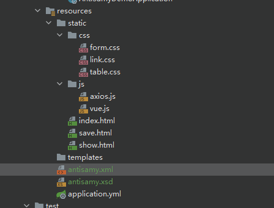
antisamy.xml
默认规则，允许大部分HTML通过
antisamy-slashdot.xml 用户只能提交下列的html标签：<b>, <u>, <i>, <a>, <blockquote>。
antisamy-ebay.xml 用户可以输入一系列的HTML的内容，不包含JavaScript。
antisamy-myspace.xml
更多的HTML和CSS，只要不包含JavaScript。
antisamy-anythinggoes.xml 更多的HTML和CSS元素输入，但不包含JavaScript。
antisamy-tinymce.xml
只允许文本格式通过，相对较安全
此时我们可以启动项目进行访问，但是还没有进行参数的过滤，所以如果我们输入任意参数都可以正常传递到Controller中，这在实际项目中是非常不安全的。为了对我们输入的数据进行过滤清理，需要通过过滤器来实现。
第三步：创建过滤器，用于过滤所有提交到服务器的请求参数
311package mao.antisamy_demo.filter;2
3import javax.servlet.*;4import javax.servlet.http.HttpServletRequest;5import java.io.IOException;6
7/**8 * Project name(项目名称)：antiSamy_demo9 * Package(包名): mao.antisamy_demo.filter10 * Class(类名): XssFilter11 * Author(作者）: mao12 * Author QQ：129619324513 * GitHub：https://github.com/maomao124/14 * Date(创建日期)： 2022/10/3015 * Time(创建时间)： 13:4416 * Version(版本): 1.017 * Description(描述)： 无18 */19
20public class XssFilter implements Filter21{22
23 24 public void doFilter(ServletRequest servletRequest, ServletResponse servletResponse, FilterChain filterChain)25 throws IOException, ServletException26 {27 HttpServletRequest request = (HttpServletRequest) servletRequest;28 //传入重写后的Request29 filterChain.doFilter(new XssRequestWrapper(request), servletResponse);30 }31}
通过上面的过滤器可以发现我们并没有在过滤器中直接进行请求参数的过滤清理，而是直接放行了，那么我们还怎么进行请求参数的过滤清理呢？其实过滤清理的工作是在另外一个类XssRequestWrapper中进行的，当上面的过滤器放行时需要调用filterChain.doFilter()方法，此方法需要传入请求Request对象，此时我们可以将当前的request对象进行包装，而XssRequestWrapper就是Request对象的包装类，在过滤器放行时会自动调用包装类的getParameterValues方法，我们可以在包装类的getParameterValues方法中进行统一的请求参数过滤清理。
第四步：创建XssRequestWrapper类
981package mao.antisamy_demo.wrapper;2
3import org.owasp.validator.html.*;4import org.slf4j.Logger;5import org.slf4j.LoggerFactory;6
7import javax.servlet.http.HttpServletRequest;8import javax.servlet.http.HttpServletRequestWrapper;9import java.io.InputStream;10
11
12/**13 * Project name(项目名称)：antiSamy_demo14 * Package(包名): mao.antisamy_demo.wrapper15 * Class(类名): XssRequestWrapper16 * Author(作者）: mao17 * Author QQ：129619324518 * GitHub：https://github.com/maomao124/19 * Date(创建日期)： 2022/10/3020 * Time(创建时间)： 13:4621 * Version(版本): 1.022 * Description(描述)： 无23 */24
25public class XssRequestWrapper extends HttpServletRequestWrapper26{27 /**28 * 策略文件 需要将要使用的策略文件放到项目资源文件路径下29 */30 ("all")31 private static final String antiSamyPath = "antisamy.xml";32
33 public static Policy policy = null;34
35 private static final Logger log = LoggerFactory.getLogger(XssRequestWrapper.class);36
37 static38 {39 // 指定策略文件40 try41 {42 InputStream inputStream = XssRequestWrapper.class.getClassLoader().getResourceAsStream(antiSamyPath);43 assert inputStream != null;44 policy = Policy.getInstance(inputStream);45 }46 catch (PolicyException e)47 {48 e.printStackTrace();49 }50 }51
52 /**53 * AntiSamy过滤数据54 *55 * @param taintedHTML 需要进行过滤的数据56 * @return 返回过滤后的数据57 */58 private String xssClean(String taintedHTML)59 {60 try61 {62 // 使用AntiSamy进行过滤63 AntiSamy antiSamy = new AntiSamy();64 CleanResults cleanResults = antiSamy.scan(taintedHTML, policy);65 taintedHTML = cleanResults.getCleanHTML();66 }67 catch (ScanException | PolicyException e)68 {69 e.printStackTrace();70 }71 return taintedHTML;72 }73
74 public XssRequestWrapper(HttpServletRequest request)75 {76 super(request);77 }78
79 80 public String[] getParameterValues(String name)81 {82 String[] values = super.getParameterValues(name);83 if (values == null)84 {85 return null;86 }87 int len = values.length;88 String[] newArray = new String[len];89 for (int j = 0; j < len; j++)90 {91 log.info("Antisamy过滤清理，清理之前的参数值：" + values[j]);92 // 过滤清理93 newArray[j] = xssClean(values[j]);94 log.info("Antisamy过滤清理，清理之后的参数值：" + newArray[j]);95 }96 return newArray;97 }98}
第五步：使上面定义的过滤器生效，创建配置类，用于初始化过滤器对象
321package mao.antisamy_demo.config;2
3import mao.antisamy_demo.filter.XssFilter;4import org.springframework.boot.web.servlet.FilterRegistrationBean;5import org.springframework.context.annotation.Bean;6import org.springframework.context.annotation.Configuration;7
8/**9 * Project name(项目名称)：antiSamy_demo10 * Package(包名): mao.antisamy_demo.config11 * Class(类名): AntiSamyConfig12 * Author(作者）: mao13 * Author QQ：129619324514 * GitHub：https://github.com/maomao124/15 * Date(创建日期)： 2022/10/3016 * Time(创建时间)： 13:5317 * Version(版本): 1.018 * Description(描述)： 无19 */20
21public class AntiSamyConfig23{24 25 public FilterRegistrationBean<XssFilter> filterRegistrationBean()26 {27 FilterRegistrationBean<XssFilter> filterRegistrationBean = new FilterRegistrationBean<>(new XssFilter());28 filterRegistrationBean.addUrlPatterns("/*");29 filterRegistrationBean.setOrder(1);30 return filterRegistrationBean;31 }32}
注意：当前我们在进行请求参数过滤时只是在包装类的getParameterValues方法中进行了处理，真实项目中可能用户提交的数据在请求头中，也可能用户提交的是json数据，所以如果考虑所有情况，我们可以在包装类中的多个方法中都进行清理处理即可
第六步：复制antisamy-ebay.xml文件到/resources目录下

第七步：修改XssRequestWrapper类
1371package mao.antisamy_demo.wrapper;2
3import org.owasp.validator.html.*;4import org.slf4j.Logger;5import org.slf4j.LoggerFactory;6
7import javax.servlet.http.HttpServletRequest;8import javax.servlet.http.HttpServletRequestWrapper;9import java.io.InputStream;10import java.util.Map;11
12
13/**14 * Project name(项目名称)：antiSamy_demo15 * Package(包名): mao.antisamy_demo.wrapper16 * Class(类名): XssRequestWrapper17 * Author(作者）: mao18 * Author QQ：129619324519 * GitHub：https://github.com/maomao124/20 * Date(创建日期)： 2022/10/3021 * Time(创建时间)： 13:4622 * Version(版本): 1.023 * Description(描述)： 无24 */25
26public class XssRequestWrapper extends HttpServletRequestWrapper27{28 /**29 * 策略文件 需要将要使用的策略文件放到项目资源文件路径下30 */31 ("all")32 private static final String antiSamyPath = "antisamy-ebay.xml";33
34 public static Policy policy = null;35
36 private static final Logger log = LoggerFactory.getLogger(XssRequestWrapper.class);37
38 static39 {40 // 指定策略文件41 try42 {43 InputStream inputStream = XssRequestWrapper.class.getClassLoader().getResourceAsStream(antiSamyPath);44 assert inputStream != null;45 policy = Policy.getInstance(inputStream);46 }47 catch (PolicyException e)48 {49 e.printStackTrace();50 }51 }52
53 /**54 * AntiSamy过滤数据55 *56 * @param taintedHTML 需要进行过滤的数据57 * @return 返回过滤后的数据58 */59 private String xssClean(String taintedHTML)60 {61 try62 {63 // 使用AntiSamy进行过滤64 AntiSamy antiSamy = new AntiSamy();65 CleanResults cr = antiSamy.scan(taintedHTML, policy);66 taintedHTML = cr.getCleanHTML();67 }68 catch (ScanException | PolicyException e)69 {70 e.printStackTrace();71 }72 return taintedHTML;73 }74
75 public XssRequestWrapper(HttpServletRequest request)76 {77 super(request);78 }79
80 81 public String[] getParameterValues(String name)82 {83 String[] values = super.getParameterValues(name);84 if (values == null)85 {86 return null;87 }88 int len = values.length;89 String[] newArray = new String[len];90 for (int j = 0; j < len; j++)91 {92 // 过滤清理93 newArray[j] = xssClean(values[j]);94 log.debug("Antisamy过滤清理，清理之前的参数值：" + values[j]);95 log.debug("Antisamy过滤清理，清理之后的参数值：" + newArray[j]);96 }97 return newArray;98 }99
100 101 public String getParameter(String paramString)102 {103 String str = super.getParameter(paramString);104 if (str == null)105 {106 return null;107 }108 return xssClean(str);109 }110
111
112 113 public String getHeader(String paramString)114 {115 String str = super.getHeader(paramString);116 if (str == null)117 {118 return null;119 }120 return xssClean(str);121 }122
123 124 public Map<String, String[]> getParameterMap()125 {126 Map<String, String[]> requestMap = super.getParameterMap();127 for (Map.Entry<String, String[]> stringEntry : requestMap.entrySet())128 {129 String[] values = stringEntry.getValue();130 for (int i = 0; i < values.length; i++)131 {132 values[i] = xssClean(values[i]);133 }134 }135 return requestMap;136 }137}
第八步：启动程序
191
2 . ____ _ __ _ _3 /\\ / ___'_ __ _ _(_)_ __ __ _ \ \ \ \4( ( )\___ | '_ | '_| | '_ \/ _` | \ \ \ \5 \\/ ___)| |_)| | | | | || (_| | ) ) ) )6 ' |____| .__|_| |_|_| |_\__, | / / / /7 =========|_|==============|___/=/_/_/_/8 :: Spring Boot :: (v2.7.1)9
102022-10-30 15:29:40.631 INFO 19548 --- [ main] m.antisamy_demo.AntiSamyDemoApplication : Starting AntiSamyDemoApplication using Java 16.0.2 on mao with PID 19548 (H:\程序\大四上期\demo\antiSamy_demo\target\classes started by mao in H:\程序\大四上期\demo\antiSamy_demo)112022-10-30 15:29:40.634 INFO 19548 --- [ main] m.antisamy_demo.AntiSamyDemoApplication : No active profile set, falling back to 1 default profile: "default"122022-10-30 15:29:41.269 INFO 19548 --- [ main] o.s.b.w.embedded.tomcat.TomcatWebServer : Tomcat initialized with port(s): 8080 (http)132022-10-30 15:29:41.277 INFO 19548 --- [ main] o.apache.catalina.core.StandardService : Starting service [Tomcat]142022-10-30 15:29:41.277 INFO 19548 --- [ main] org.apache.catalina.core.StandardEngine : Starting Servlet engine: [Apache Tomcat/9.0.64]152022-10-30 15:29:41.355 INFO 19548 --- [ main] o.a.c.c.C.[Tomcat].[localhost].[/] : Initializing Spring embedded WebApplicationContext162022-10-30 15:29:41.355 INFO 19548 --- [ main] w.s.c.ServletWebServerApplicationContext : Root WebApplicationContext: initialization completed in 682 ms172022-10-30 15:29:41.494 INFO 19548 --- [ main] o.s.b.a.w.s.WelcomePageHandlerMapping : Adding welcome page: class path resource [static/index.html]182022-10-30 15:29:41.596 INFO 19548 --- [ main] o.s.b.w.embedded.tomcat.TomcatWebServer : Tomcat started on port(s): 8080 (http) with context path ''192022-10-30 15:29:41.605 INFO 19548 --- [ main] m.antisamy_demo.AntiSamyDemoApplication : Started AntiSamyDemoApplication in 1.262 seconds (JVM running for 1.729)
到了这里，我发现一个问题，那就是无法清理通过请求体传过来json数据的情况，有时候需要将数据封装到请求体中在使用json的格式发送到后端。
对此，有三种方案，第一种就是放弃异步提交的方式，采用同步提交，就是传统的表单提交，第二种就是在controller里编写繁琐的业务代码，将没一个字段都过滤一次，第三种就是重写JsonDeserializer
第九步：访问


请求体的数据不会被过滤
以下是解决方案1
第十步：更改StudentController
731package mao.antisamy_demo.controller;2
3import mao.antisamy_demo.entity.Student;4import mao.antisamy_demo.wrapper.XssRequestWrapper;5import org.apache.juli.logging.Log;6import org.slf4j.Logger;7import org.slf4j.LoggerFactory;8import org.springframework.beans.factory.annotation.Autowired;9import org.springframework.web.bind.annotation.*;10
11import java.util.ArrayList;12import java.util.Collections;13import java.util.List;14
15/**16 * Project name(项目名称)：antiSamy_demo17 * Package(包名): mao.antisamy_demo.controller18 * Class(类名): StudentController19 * Author(作者）: mao20 * Author QQ：129619324521 * GitHub：https://github.com/maomao124/22 * Date(创建日期)： 2022/10/2923 * Time(创建时间)： 20:0524 * Version(版本): 1.025 * Description(描述)： 无26 */27
28("/student")30public class StudentController31{32 private static final List<Student> list = Collections.synchronizedList(new ArrayList<>());33
34 private static final Logger log = LoggerFactory.getLogger(StudentController.class);35
36
37 ("/init")38 public synchronized void init()39 {40 Student student1 = new Student(10001, "张三", "男", 18);41 Student student2 = new Student(10002, "李四", "女", 16);42 Student student3 = new Student(10003, "王五", "男", 20);43 list.clear();44 list.add(student1);45 list.add(student2);46 list.add(student3);47 log.info("初始化完成");48 }49
50 51 public boolean save( Student student)52 {53 list.add(student);54 log.info("添加成功：\n" + student);55 return true;56 }57
58 ("/sync")59 public boolean saveSync(Student student)60 {61 list.add(student);62 log.info("添加成功：\n" + student);63 return true;64 }65
66 67 public List<Student> getAll()68 {69 log.info("查询所有：\n" + list);70 return list;71 }72
73}
第十一步：编写save2.html
1531
3<!--4Project name(项目名称)：antiSamy_demo5 File name(文件名): save6 Authors(作者）: mao7 Author QQ：12961932458 GitHub：https://github.com/maomao124/9 Date(创建日期)： 2022/10/2910 Time(创建时间)： 20:2311 Description(描述)： 无12-->13
14<html lang="en">15<head>16 <meta charset="UTF-8">17 <title>Title</title>18 <link rel="stylesheet" href="css/form.css">19 <script src="js/axios.js"></script>20 <script src="js/vue.js"></script>21 <style>22 body {23 background-color: skyblue;24 }25 </style>26</head>27<body>28
29<div id="app">30
31
32 <div class="form_position">33 <div class="animated bounceInDown">34 <div class="form">35 <form action="/student/sync" method="post">36 <table border="1">37 <tr>38 <td colspan="2" align="center">39 </td>40 </tr>41 <tr>42 <td class="prompt">学生学号</td>43 <td>44 <label>45 <input v-model="student.id" class="input" type="number" name="id">46 </label>47 </td>48 </tr>49 <tr>50 <td class="prompt">学生姓名</td>51 <td>52 <label>53 <input v-model="student.name" class="input" type="text" name="name">54 </label>55 </td>56 </tr>57 <tr>58 <td class="prompt">学生性别</td>59 <td>60 <label>61 <input v-model="student.sex" class="input" type="text" name="sex">62 </label>63 </td>64 </tr>65 <tr>66 <td class="prompt">学生年龄</td>67 <td>68 <label>69 <input v-model="student.age" class="input" type="number" name="age">70 </label>71 </td>72 </tr>73 <tr>74 <td colspan="2" align="center">75 <input @click="f()" class="submit" type="submit" value="提交"/>76 </td>77 </tr>78 </table>79 </form>80 </div>81 </div>82 </div>83
84</div>85
86<!--<script>alert("xss攻击")</script>-->87<!--<h1>xss攻击</h1>-->88
89<script>90
91 // var app = new Vue(92 // {93 // el: "#app",94 // data: {95 // student: {96 // id: null,97 // name: null,98 // sex: null,99 // age: null,100 // }101 // },102 // methods: {103 // f: function ()104 // {105 // console.log("提交")106 // console.log(this.student)107 // var that = this;108 // //axios发起ajax请求109 // axios({110 // //请求的方式：111 // method: "post",112 // //请求的url:113 // url: "/student",114 // //url参数：115 // params:116 // {},117 // //头信息：118 // headers:119 // {},120 // //请求体参数：121 // data:122 // {123 // id: that.student.id,124 // name: that.student.name,125 // sex: that.student.sex,126 // age: that.student.age,127 // },128 // }).then(response =>129 // {130 // console.log(response);131 // if (response.data === true)132 // {133 // alert("请求成功")134 // }135 // else136 // {137 // alert("失败")138 // }139 //140 // }).catch(error =>141 // {142 // //console.log(error);143 // alert("网络异常！");144 // })145 // }146 // }147 // }148 // )149
150</script>151
152</body>153</html>
第十二步：修改index.html
791
3<!--4Project name(项目名称)：antiSamy_demo5 File name(文件名): index6 Authors(作者）: mao7 Author QQ：12961932458 GitHub：https://github.com/maomao124/9 Date(创建日期)： 2022/10/2910 Time(创建时间)： 20:0311 Description(描述)： 无12-->13
14<html lang="en">15<head>16 <meta charset="UTF-8">17 <title>索引</title>18 <link rel="stylesheet" href="/css/link.css">19 <script src="/js/axios.js"></script>20
21
22 <style>23 body {24 background-color: skyblue;25 }26
27 div.a {28 position: absolute;29 top: 50%;30 left: 50%;31 transform: translate(-50%, -50%);32 }33 </style>34</head>35<body>36
37<div class="a">38
39 <a href="/show.html">显示所有学生信息</a>40 <a href="/save.html">添加学生信息</a>41 <a href="/save2.html">添加学生信息-同步</a>42 <a href="" onclick="init()">初始化数据</a>43
44</div>45
46<script>47
48 function init()49 {50 //axios发起ajax请求51 axios({52 //请求的方式：53 method: "post",54 //请求的url:55 url: "/student/init",56 //url参数：57 params:58 {},59 //头信息：60 headers:61 {},62 //请求体参数：63 data:64 {},65 }).then(response =>66 {67 console.log(response);68 alert("初始化数据成功");69 }).catch(error =>70 {71 //console.log(error);72 alert("网络异常！");73 })74 }75
76</script>77
78</body>79</html>
第十三步：重启并访问

第十四步：查看控制台日志

可以看到表单提交的数据是可以被清理的
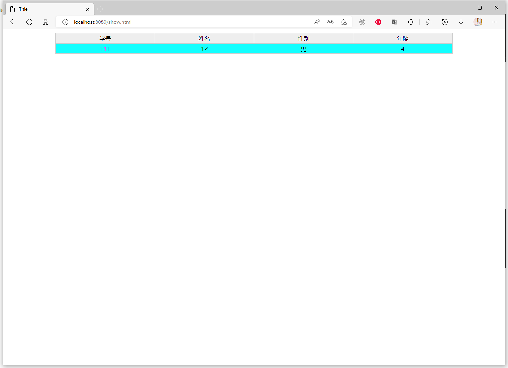
以下是解决方案2
第十五步：编写XssFilterService
731package mao.antisamy_demo.service;2
3import mao.antisamy_demo.wrapper.XssRequestWrapper;4import org.owasp.validator.html.*;5import org.slf4j.Logger;6import org.slf4j.LoggerFactory;7import org.springframework.stereotype.Service;8
9import java.io.InputStream;10
11/**12 * Project name(项目名称)：antiSamy_demo13 * Package(包名): mao.antisamy_demo.service14 * Class(类名): XssFilterService15 * Author(作者）: mao16 * Author QQ：129619324517 * GitHub：https://github.com/maomao124/18 * Date(创建日期)： 2022/10/3019 * Time(创建时间)： 15:4320 * Version(版本): 1.021 * Description(描述)： 无22 */23
24public class XssFilterService26{27 /**28 * 策略文件 需要将要使用的策略文件放到项目资源文件路径下29 */30 ("all")31 private static final String antiSamyPath = "antisamy-ebay.xml";32
33 public static Policy policy = null;34
35 private static final Logger log = LoggerFactory.getLogger(XssRequestWrapper.class);36
37 static38 {39 // 指定策略文件40 try41 {42 InputStream inputStream = XssRequestWrapper.class.getClassLoader().getResourceAsStream(antiSamyPath);43 assert inputStream != null;44 policy = Policy.getInstance(inputStream);45 }46 catch (PolicyException e)47 {48 e.printStackTrace();49 }50 }51
52 /**53 * AntiSamy过滤数据54 *55 * @param taintedHTML 需要进行过滤的数据56 * @return 返回过滤后的数据57 */58 public String xssClean(String taintedHTML)59 {60 try61 {62 // 使用AntiSamy进行过滤63 AntiSamy antiSamy = new AntiSamy();64 CleanResults cleanResults = antiSamy.scan(taintedHTML, policy);65 taintedHTML = cleanResults.getCleanHTML();66 }67 catch (ScanException | PolicyException e)68 {69 e.printStackTrace();70 }71 return taintedHTML;72 }73}
第十六步：修改StudentController
891package mao.antisamy_demo.controller;2
3import mao.antisamy_demo.entity.Student;4import mao.antisamy_demo.service.XssFilterService;5import mao.antisamy_demo.wrapper.XssRequestWrapper;6import org.apache.juli.logging.Log;7import org.slf4j.Logger;8import org.slf4j.LoggerFactory;9import org.springframework.beans.factory.annotation.Autowired;10import org.springframework.web.bind.annotation.*;11
12import java.util.ArrayList;13import java.util.Collections;14import java.util.List;15
16/**17 * Project name(项目名称)：antiSamy_demo18 * Package(包名): mao.antisamy_demo.controller19 * Class(类名): StudentController20 * Author(作者）: mao21 * Author QQ：129619324522 * GitHub：https://github.com/maomao124/23 * Date(创建日期)： 2022/10/2924 * Time(创建时间)： 20:0525 * Version(版本): 1.026 * Description(描述)： 无27 */28
29("/student")31public class StudentController32{33 private static final List<Student> list = Collections.synchronizedList(new ArrayList<>());34
35 private static final Logger log = LoggerFactory.getLogger(StudentController.class);36
37 38 private XssFilterService xssFilterService;39
40 ("/init")41 public synchronized void init()42 {43 Student student1 = new Student(10001, "张三", "男", 18);44 Student student2 = new Student(10002, "李四", "女", 16);45 Student student3 = new Student(10003, "王五", "男", 20);46 list.clear();47 list.add(student1);48 list.add(student2);49 list.add(student3);50 log.info("初始化完成");51 }52
53// @PostMapping54// public boolean save(@RequestBody Student student)55// {56// list.add(student);57// log.info("添加成功：\n" + student);58// return true;59// }60
61
62 63 public boolean save( Student student)64 {65 student.setName(xssFilterService.xssClean(student.getName()));66 student.setSex(xssFilterService.xssClean(student.getSex()));67
68 list.add(student);69 log.info("添加成功：\n" + student);70 return true;71 }72
73
74 ("/sync")75 public boolean saveSync(Student student)76 {77 list.add(student);78 log.info("添加成功：\n" + student);79 return true;80 }81
82 83 public List<Student> getAll()84 {85 log.info("查询所有：\n" + list);86 return list;87 }88
89}
第十七步：重启并访问

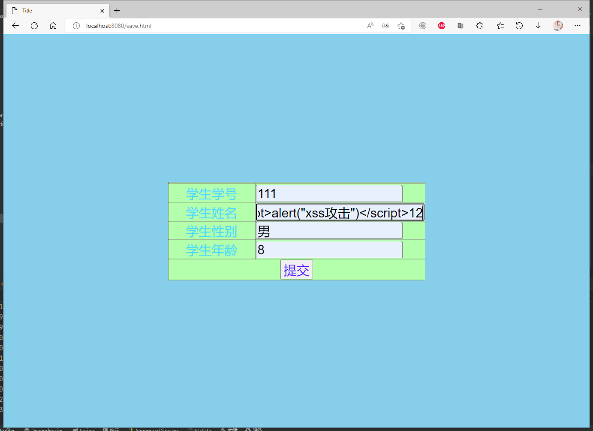

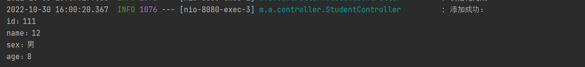
可以看到脚本代码被清除了

以下是解决方案3
第十八步：编写类XssStringJsonDeserializer
711package mao.antisamy_demo.converter;2
3import com.fasterxml.jackson.core.JsonParser;4import com.fasterxml.jackson.core.JsonProcessingException;5import com.fasterxml.jackson.core.JsonToken;6import com.fasterxml.jackson.databind.DeserializationContext;7import com.fasterxml.jackson.databind.JsonDeserializer;8import mao.antisamy_demo.service.XssFilterService;9
10import java.io.IOException;11import java.util.ArrayList;12import java.util.List;13
14/**15 * Project name(项目名称)：AntiSamy_spring_boot_starter_demo16 * Package(包名): mao.tools_xss.converter17 * Class(类名): XssStringJsonDeserializer18 * Author(作者）: mao19 * Author QQ：129619324520 * GitHub：https://github.com/maomao124/21 * Date(创建日期)： 2022/10/3022 * Time(创建时间)： 20:1423 * Version(版本): 1.024 * Description(描述)： 过滤跨站脚本的 反序列化工具25 */26
27public class XssStringJsonDeserializer extends JsonDeserializer<String>28{29
30 private final XssFilterService xssFilterService;31
32 public XssStringJsonDeserializer(XssFilterService xssFilterService)33 {34 this.xssFilterService = xssFilterService;35 }36
37 38 public String deserialize(JsonParser p, DeserializationContext dc) throws IOException, JsonProcessingException39 {40 if (p.hasToken(JsonToken.VALUE_STRING))41 {42 String value = p.getValueAsString();43
44 if (value == null || "".equals(value))45 {46 return value;47 }48
49 List<String> list = new ArrayList<>();50 list.add("<script>");51 list.add("</script>");52 list.add("<iframe>");53 list.add("</iframe>");54 list.add("<noscript>");55 list.add("</noscript>");56 list.add("<frameset>");57 list.add("</frameset>");58 list.add("<frame>");59 list.add("</frame>");60 list.add("<noframes>");61 list.add("</noframes>");62 boolean flag = list.stream().anyMatch(value::contains);63 if (flag)64 {65 return xssFilterService.xssClean(value);66 }67 return value;68 }69 return null;70 }71}
第十九步：修改配置类AntiSamyConfig
541package mao.antisamy_demo.config;2
3import mao.antisamy_demo.converter.XssStringJsonDeserializer;4import mao.antisamy_demo.filter.XssFilter;5import mao.antisamy_demo.service.XssFilterService;6import org.springframework.beans.factory.annotation.Autowired;7import org.springframework.boot.autoconfigure.jackson.Jackson2ObjectMapperBuilderCustomizer;8import org.springframework.boot.web.servlet.FilterRegistrationBean;9import org.springframework.context.annotation.Bean;10import org.springframework.context.annotation.Configuration;11
12import javax.servlet.DispatcherType;13
14/**15 * Project name(项目名称)：antiSamy_demo16 * Package(包名): mao.antisamy_demo.config17 * Class(类名): AntiSamyConfig18 * Author(作者）: mao19 * Author QQ：129619324520 * GitHub：https://github.com/maomao124/21 * Date(创建日期)： 2022/10/3022 * Time(创建时间)： 13:5323 * Version(版本): 1.024 * Description(描述)： 无25 */26
27
28public class AntiSamyConfig30{31 32 public FilterRegistrationBean<XssFilter> filterRegistrationBean()33 {34 FilterRegistrationBean<XssFilter> filterRegistration = new FilterRegistrationBean<>(new XssFilter());35 filterRegistration.addUrlPatterns("/*");36 filterRegistration.setDispatcherTypes(DispatcherType.REQUEST);37 filterRegistration.setName("xssFilter");38 filterRegistration.setOrder(1);39
40 return filterRegistration;41 }42
43 /**44 * 配置跨站攻击 反序列化处理器45 *46 * @return Jackson2ObjectMapperBuilderCustomizer47 */48 49 public Jackson2ObjectMapperBuilderCustomizer jackson2ObjectMapperBuilderCustomizer2( XssFilterService xssFilterService)50 {51 return builder -> builder.deserializerByType(String.class, new XssStringJsonDeserializer(xssFilterService));52 }53
54}
第二十步：修改StudentController
891package mao.antisamy_demo.controller;2
3import mao.antisamy_demo.entity.Student;4import mao.antisamy_demo.service.XssFilterService;5import mao.antisamy_demo.wrapper.XssRequestWrapper;6import org.apache.juli.logging.Log;7import org.slf4j.Logger;8import org.slf4j.LoggerFactory;9import org.springframework.beans.factory.annotation.Autowired;10import org.springframework.web.bind.annotation.*;11
12import java.util.ArrayList;13import java.util.Collections;14import java.util.List;15
16/**17 * Project name(项目名称)：antiSamy_demo18 * Package(包名): mao.antisamy_demo.controller19 * Class(类名): StudentController20 * Author(作者）: mao21 * Author QQ：129619324522 * GitHub：https://github.com/maomao124/23 * Date(创建日期)： 2022/10/2924 * Time(创建时间)： 20:0525 * Version(版本): 1.026 * Description(描述)： 无27 */28
29("/student")31public class StudentController32{33 private static final List<Student> list = Collections.synchronizedList(new ArrayList<>());34
35 private static final Logger log = LoggerFactory.getLogger(StudentController.class);36
37 38 private XssFilterService xssFilterService;39
40 ("/init")41 public synchronized void init()42 {43 Student student1 = new Student(10001, "张三", "男", 18);44 Student student2 = new Student(10002, "李四", "女", 16);45 Student student3 = new Student(10003, "王五", "男", 20);46 list.clear();47 list.add(student1);48 list.add(student2);49 list.add(student3);50 log.info("初始化完成");51 }52
53 54 public boolean save( Student student)55 {56 list.add(student);57 log.info("添加成功：\n" + student);58 return true;59 }60
61
62// @PostMapping63// public boolean save(@RequestBody Student student)64// {65// student.setName(xssFilterService.xssClean(student.getName()));66// student.setSex(xssFilterService.xssClean(student.getSex()));67//68// list.add(student);69// log.info("添加成功：\n" + student);70// return true;71// }72
73
74 ("/sync")75 public boolean saveSync(Student student)76 {77 list.add(student);78 log.info("添加成功：\n" + student);79 return true;80 }81
82 83 public List<Student> getAll()84 {85 log.info("查询所有：\n" + list);86 return list;87 }88
89}
第二十一步：重启并访问服务


可以看到标签成功地被过滤掉了
自定义spring boot starter
为了方便使用，需要定义成一个starter，不需要额外进行任何配置就可以使用
开发starter
第一步：初始化项目
创建父工程AntiSamy_spring_boot_starter_demo
创建子工程tools-xss
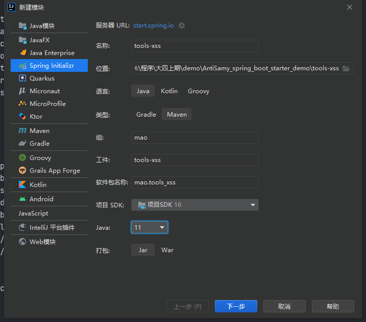
创建子工程use-starter
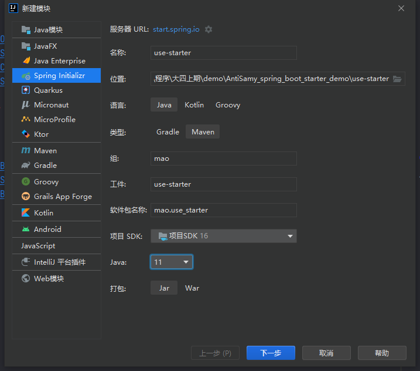
第二步：修改pom文件
父工程AntiSamy_spring_boot_starter_demo的pom文件：
441 2<project xmlns="http://maven.apache.org/POM/4.0.0" xmlns:xsi="http://www.w3.org/2001/XMLSchema-instance"3 xsi:schemaLocation="http://maven.apache.org/POM/4.0.0 https://maven.apache.org/xsd/maven-4.0.0.xsd">4 <modelVersion>4.0.0</modelVersion>5 <parent>6 <artifactId>AntiSamy_spring_boot_starter_demo</artifactId>7 <groupId>mao</groupId>8 <version>0.0.1-SNAPSHOT</version>9 </parent>10
11 <artifactId>use-starter</artifactId>12 <version>0.0.1-SNAPSHOT</version>13 <name>use-starter</name>14 <description>use-starter</description>15
16 <properties>17
18 </properties>19
20 <dependencies>21
22 <dependency>23 <groupId>org.springframework.boot</groupId>24 <artifactId>spring-boot-starter-web</artifactId>25 </dependency>26
27 <dependency>28 <groupId>org.springframework.boot</groupId>29 <artifactId>spring-boot-starter-test</artifactId>30 <scope>test</scope>31 </dependency>32
33 </dependencies>34
35 <build>36 <plugins>37 <plugin>38 <groupId>org.springframework.boot</groupId>39 <artifactId>spring-boot-maven-plugin</artifactId>40 </plugin>41 </plugins>42 </build>43
44</project>
子工程tools-xss的pom文件：
721 2<project xmlns="http://maven.apache.org/POM/4.0.0" xmlns:xsi="http://www.w3.org/2001/XMLSchema-instance"3 xsi:schemaLocation="http://maven.apache.org/POM/4.0.0 https://maven.apache.org/xsd/maven-4.0.0.xsd">4 <modelVersion>4.0.0</modelVersion>5 <parent>6 <artifactId>AntiSamy_spring_boot_starter_demo</artifactId>7 <groupId>mao</groupId>8 <version>0.0.1-SNAPSHOT</version>9 </parent>10
11 <artifactId>tools-xss</artifactId>12 <version>0.0.1-SNAPSHOT</version>13 <name>tools-xss</name>14 <description>tools-xss</description>15
16 <properties>17
18 </properties>19
20 <dependencies>21
22 <dependency>23 <groupId>org.springframework.boot</groupId>24 <artifactId>spring-boot-starter-web</artifactId>25 </dependency>26
27 <!--spring boot starter开发依赖-->28 <dependency>29 <groupId>org.springframework.boot</groupId>30 <artifactId>spring-boot-starter</artifactId>31 </dependency>32
33 <dependency>34 <groupId>org.springframework.boot</groupId>35 <artifactId>spring-boot-autoconfigure</artifactId>36 </dependency>37
38 <dependency>39 <groupId>org.springframework.boot</groupId>40 <artifactId>spring-boot-configuration-processor</artifactId>41 </dependency>42
43 <!--解决xss攻击-->44 <dependency>45 <groupId>org.owasp.antisamy</groupId>46 <artifactId>antisamy</artifactId>47 <version>1.5.7</version>48 </dependency>49
50 <!--阿里巴巴的FastJson json解析-->51 <dependency>52 <groupId>com.alibaba</groupId>53 <artifactId>fastjson</artifactId>54 <version>1.2.79</version>55 </dependency>56
57 </dependencies>58
59 <build>60 <plugins>61 <plugin>62 <groupId>org.springframework.boot</groupId>63 <artifactId>spring-boot-maven-plugin</artifactId>64 <configuration>65 <skip>true</skip>66 </configuration>67 </plugin>68 </plugins>69 </build>70
71</project>72
子工程use-starter的pom文件：
441 2<project xmlns="http://maven.apache.org/POM/4.0.0" xmlns:xsi="http://www.w3.org/2001/XMLSchema-instance"3 xsi:schemaLocation="http://maven.apache.org/POM/4.0.0 https://maven.apache.org/xsd/maven-4.0.0.xsd">4 <modelVersion>4.0.0</modelVersion>5 <parent>6 <artifactId>AntiSamy_spring_boot_starter_demo</artifactId>7 <groupId>mao</groupId>8 <version>0.0.1-SNAPSHOT</version>9 </parent>10
11 <artifactId>use-starter</artifactId>12 <version>0.0.1-SNAPSHOT</version>13 <name>use-starter</name>14 <description>use-starter</description>15
16 <properties>17
18 </properties>19
20 <dependencies>21
22 <dependency>23 <groupId>org.springframework.boot</groupId>24 <artifactId>spring-boot-starter-web</artifactId>25 </dependency>26
27 <dependency>28 <groupId>org.springframework.boot</groupId>29 <artifactId>spring-boot-starter-test</artifactId>30 <scope>test</scope>31 </dependency>32
33 </dependencies>34
35 <build>36 <plugins>37 <plugin>38 <groupId>org.springframework.boot</groupId>39 <artifactId>spring-boot-maven-plugin</artifactId>40 </plugin>41 </plugins>42 </build>43
44</project>
第三步：编写工具类XssUtils
1401package mao.tools_xss.utils;2
3
4import org.owasp.validator.html.*;5import org.slf4j.Logger;6import org.slf4j.LoggerFactory;7
8import java.io.IOException;9import java.io.InputStream;10import java.util.List;11
12/**13 * Project name(项目名称)：AntiSamy_spring_boot_starter_demo14 * Package(包名): mao.tools_xss.utils15 * Class(类名): XssUtils16 * Author(作者）: mao17 * Author QQ：129619324518 * GitHub：https://github.com/maomao124/19 * Date(创建日期)： 2022/10/3020 * Time(创建时间)： 20:0321 * Version(版本): 1.022 * Description(描述)： XSS 工具类， 用于过滤特殊字符23 */24
25public class XssUtils26{27 private static final Logger log = LoggerFactory.getLogger(XssUtils.class);28
29 private static final String ANTISAMY_SLASHDOT_XML = "antisamy-slashdot-1.4.4.xml";30 private static Policy policy = null;31
32 static33 {34 log.debug(" start read XSS configfile [" + ANTISAMY_SLASHDOT_XML + "]");35 InputStream inputStream = XssUtils.class.getClassLoader().getResourceAsStream(ANTISAMY_SLASHDOT_XML);36 try37 {38 policy = Policy.getInstance(inputStream);39 log.debug("read XSS configfile [" + ANTISAMY_SLASHDOT_XML + "] success");40 }41 catch (PolicyException e)42 {43 log.error("read XSS configfile [" + ANTISAMY_SLASHDOT_XML + "] fail , reason:", e);44 }45 finally46 {47 if (inputStream != null)48 {49 try50 {51 inputStream.close();52 }53 catch (IOException e)54 {55 log.error("close XSS configfile [" + ANTISAMY_SLASHDOT_XML + "] fail , reason:", e);56 }57 }58 }59 }60
61 /**62 * 跨站攻击语句过滤 方法63 *64 * @param paramValue 待过滤的参数65 * @param ignoreParamValueList 忽略过滤的参数列表66 * @return String67 */68 public static String xssClean(String paramValue, List<String> ignoreParamValueList)69 {70 AntiSamy antiSamy = new AntiSamy();71 try72 {73 log.debug("raw value before xssClean: " + paramValue);74 if (isIgnoreParamValue(paramValue, ignoreParamValueList))75 {76 log.debug("ignore the xssClean,keep the raw paramValue: " + paramValue);77 return paramValue;78 }79 else80 {81 final CleanResults cleanResults = antiSamy.scan(paramValue, policy);82 cleanResults.getErrorMessages().forEach(log::debug);83 String str = cleanResults.getCleanHTML();84 /*String str = StringEscapeUtils.escapeHtml(cleanResults.getCleanHTML());85 str = str.replaceAll((antiSamy.scan(" ", policy)).getCleanHTML(), "");86 str = StringEscapeUtils.unescapeHtml(str);*/87 /*str = str.replaceAll(""", "\"");88 str = str.replaceAll("&", "&");89 str = str.replaceAll("'", "'");90 str = str.replaceAll("'", "＇");91
92 str = str.replaceAll("<", "<");93 str = str.replaceAll(">", ">");*/94 log.debug("xssfilter value after xssClean" + str);95
96 return str;97 }98 }99 catch (ScanException e)100 {101 log.error("scan failed armter is [" + paramValue + "]", e);102 }103 catch (PolicyException e)104 {105 log.error("antisamy convert failed armter is [" + paramValue + "]", e);106 }107 return paramValue;108 }109
110 /**111 * 忽略参数值112 *113 * @param paramValue 参数值114 * @param ignoreParamValueList 忽略参数值列表115 * @return boolean116 */117 private static boolean isIgnoreParamValue(String paramValue, List<String> ignoreParamValueList)118 {119 if (paramValue == null || paramValue.equals(""))120 {121 return true;122 }123 if (ignoreParamValueList == null || ignoreParamValueList.size() == 0)124 {125 return false;126 }127 else128 {129 for (String ignoreParamValue : ignoreParamValueList)130 {131 if (paramValue.contains(ignoreParamValue))132 {133 return true;134 }135 }136 }137 return false;138 }139}140
第四步：编写类XssRequestWrapper
931package mao.tools_xss.wrapper;2
3import mao.tools_xss.utils.XssUtils;4import org.slf4j.Logger;5import org.slf4j.LoggerFactory;6
7import javax.servlet.http.HttpServletRequest;8import javax.servlet.http.HttpServletRequestWrapper;9import java.util.List;10import java.util.Map;11
12/**13 * Project name(项目名称)：AntiSamy_spring_boot_starter_demo14 * Package(包名): mao.tools_xss.wrapper15 * Class(类名): XssRequestWrapper16 * Author(作者）: mao17 * Author QQ：129619324518 * GitHub：https://github.com/maomao124/19 * Date(创建日期)： 2022/10/3020 * Time(创建时间)： 20:0121 * Version(版本): 1.022 * Description(描述)： 无23 */24
25public class XssRequestWrapper extends HttpServletRequestWrapper26{27
28 private static final Logger log = LoggerFactory.getLogger(XssRequestWrapper.class);29
30 private final List<String> ignoreParamValueList;31
32 public XssRequestWrapper(HttpServletRequest request, List<String> ignoreParamValueList)33 {34 super(request);35 this.ignoreParamValueList = ignoreParamValueList;36 }37
38 39 public Map<String, String[]> getParameterMap()40 {41 Map<String, String[]> requestMap = super.getParameterMap();42 for (Map.Entry<String, String[]> me : requestMap.entrySet())43 {44 log.debug(me.getKey() + ":");45 String[] values = me.getValue();46 for (int i = 0; i < values.length; i++)47 {48 log.debug(values[i]);49 values[i] = XssUtils.xssClean(values[i], this.ignoreParamValueList);50 }51 }52 return requestMap;53 }54
55 56 public String[] getParameterValues(String paramString)57 {58 String[] arrayOfString1 = super.getParameterValues(paramString);59 if (arrayOfString1 == null)60 {61 return null;62 }63 int i = arrayOfString1.length;64 String[] arrayOfString2 = new String[i];65 for (int j = 0; j < i; j++)66 {67 arrayOfString2[j] = XssUtils.xssClean(arrayOfString1[j], this.ignoreParamValueList);68 }69 return arrayOfString2;70 }71
72 73 public String getParameter(String paramString)74 {75 String str = super.getParameter(paramString);76 if (str == null)77 {78 return null;79 }80 return XssUtils.xssClean(str, this.ignoreParamValueList);81 }82
83 84 public String getHeader(String paramString)85 {86 String str = super.getHeader(paramString);87 if (str == null)88 {89 return null;90 }91 return XssUtils.xssClean(str, this.ignoreParamValueList);92 }93}
第五步：编写类XssStringJsonDeserializer
911package mao.tools_xss.converter;2
3import com.fasterxml.jackson.core.JsonParser;4import com.fasterxml.jackson.core.JsonProcessingException;5import com.fasterxml.jackson.core.JsonToken;6import com.fasterxml.jackson.databind.DeserializationContext;7import com.fasterxml.jackson.databind.JsonDeserializer;8
9import com.fasterxml.jackson.databind.JsonDeserializer;10import mao.tools_xss.utils.XssUtils;11
12import java.io.IOException;13import java.util.ArrayList;14import java.util.List;15
16/**17 * Project name(项目名称)：AntiSamy_spring_boot_starter_demo18 * Package(包名): mao.tools_xss.converter19 * Class(类名): XssStringJsonDeserializer20 * Author(作者）: mao21 * Author QQ：129619324522 * GitHub：https://github.com/maomao124/23 * Date(创建日期)： 2022/10/3024 * Time(创建时间)： 20:1425 * Version(版本): 1.026 * Description(描述)： 过滤跨站脚本的 反序列化工具27 */28
29public class XssStringJsonDeserializer extends JsonDeserializer<String>30{31
32 private static final List<String> list = new ArrayList<>();33
34 static35 {36 list.add("<script>");37 list.add("</script>");38 list.add("<iframe>");39 list.add("</iframe>");40 list.add("<noscript>");41 list.add("</noscript>");42 list.add("<frameset>");43 list.add("</frameset>");44 list.add("<frame>");45 list.add("</frame>");46 list.add("<noframes>");47 list.add("</noframes>");48 list.add("<h1>");49 list.add("</h1>");50 list.add("<h2>");51 list.add("</h2>");52 list.add("<h3>");53 list.add("</h3>");54 list.add("<h4>");55 list.add("</h4>");56 list.add("<h5>");57 list.add("</h5>");58 list.add("<h6>");59 list.add("</h6>");60 list.add("<img>");61 list.add("</img>");62 list.add("<table>");63 list.add("</table>");64 list.add("<form>");65 list.add("</form>");66 }67
68
69 70 public String deserialize(JsonParser p, DeserializationContext dc) throws IOException, JsonProcessingException71 {72 if (p.hasToken(JsonToken.VALUE_STRING))73 {74 String value = p.getValueAsString();75
76 if (value == null || "".equals(value))77 {78 return value;79 }80
81 boolean flag = list.stream().anyMatch(value::contains);82 if (flag)83 {84 return XssUtils.xssClean(value, null);85 }86 return value;87 }88 return null;89 }90}91
第六步：编写过滤器类XssFilter
1481package mao.tools_xss.filter;2
3import com.alibaba.fastjson.JSON;4import mao.tools_xss.wrapper.XssRequestWrapper;5import org.slf4j.Logger;6import org.slf4j.LoggerFactory;7
8
9import javax.servlet.Filter;10import javax.servlet.FilterChain;11import javax.servlet.FilterConfig;12import javax.servlet.ServletException;13import javax.servlet.ServletRequest;14import javax.servlet.ServletResponse;15import javax.servlet.http.HttpServletRequest;16import java.io.IOException;17import java.util.ArrayList;18import java.util.Arrays;19import java.util.List;20
21/**22 * Project name(项目名称)：AntiSamy_spring_boot_starter_demo23 * Package(包名): mao.tools_xss.filter24 * Class(类名): XssFilter25 * Author(作者）: mao26 * Author QQ：129619324527 * GitHub：https://github.com/maomao124/28 * Date(创建日期)： 2022/10/3029 * Time(创建时间)： 20:1830 * Version(版本): 1.031 * Description(描述)： 无32 */33
34public class XssFilter implements Filter35{36
37 private static final Logger log = LoggerFactory.getLogger(XssFilter.class);38
39 /**40 * 可放行的请求路径41 */42 private static final String IGNORE_PATH = "ignorePath";43 /**44 * 可放行的参数值45 */46 private static final String IGNORE_PARAM_VALUE = "ignoreParamValue";47 /**48 * 默认放行单点登录的登出响应(响应中包含samlp:LogoutRequest标签，直接放行)49 */50 private static final String CAS_LOGOUT_RESPONSE_TAG = "samlp:LogoutRequest";51 /**52 * 可放行的请求路径列表53 */54 private List<String> ignorePathList;55 /**56 * 可放行的参数值列表57 */58 private List<String> ignoreParamValueList;59
60 61 public void init(FilterConfig filterConfig) throws ServletException62 {63 log.debug("XSS fiter [XSSFilter] init start ...");64 String ignorePaths = filterConfig.getInitParameter(IGNORE_PATH);65 String ignoreParamValues = filterConfig.getInitParameter(IGNORE_PARAM_VALUE);66 if (!(ignorePaths == null || ignorePaths.equals("")))67 {68 String[] ignorePathArr = ignorePaths.split(",");69 ignorePathList = Arrays.asList(ignorePathArr);70 }71 if (!(ignoreParamValues == null || ignoreParamValues.equals("")))72 {73 String[] ignoreParamValueArr = ignoreParamValues.split(",");74 ignoreParamValueList = Arrays.asList(ignoreParamValueArr);75 //默认放行单点登录的登出响应(响应中包含samlp:LogoutRequest标签，直接放行)76 if (!ignoreParamValueList.contains(CAS_LOGOUT_RESPONSE_TAG))77 {78 ignoreParamValueList.add(CAS_LOGOUT_RESPONSE_TAG);79 }80 }81 else82 {83 //默认放行单点登录的登出响应(响应中包含samlp:LogoutRequest标签，直接放行)84 ignoreParamValueList = new ArrayList<>();85 ignoreParamValueList.add(CAS_LOGOUT_RESPONSE_TAG);86 }87 log.debug("ignorePathList=" + JSON.toJSONString(ignorePathList));88 log.debug("ignoreParamValueList=" + JSON.toJSONString(ignoreParamValueList));89 log.debug("XSS fiter [XSSFilter] init end");90 }91
92 93 public void doFilter(ServletRequest request, ServletResponse response, FilterChain chain)94 throws IOException, ServletException95 {96 log.debug("XSS fiter [XSSFilter] starting");97 // 判断uri是否包含项目名称98 String uriPath = ((HttpServletRequest) request).getRequestURI();99 if (isIgnorePath(uriPath))100 {101 log.debug("ignore xssfilter,path[" + uriPath + "] pass through XssFilter, go ahead...");102 chain.doFilter(request, response);103 return;104 }105 else106 {107 log.debug("has xssfiter path[" + uriPath + "] need XssFilter, go to XssRequestWrapper");108 //传入重写后的Request109 chain.doFilter(new XssRequestWrapper((HttpServletRequest) request, ignoreParamValueList), response);110 }111 log.debug("XSS fiter [XSSFilter] stop");112 }113
114 115 public void destroy()116 {117 log.debug("XSS fiter [XSSFilter] destroy");118 }119
120 /**121 * 是否为忽略的请求路径122 *123 * @param servletPath servlet路径124 * @return boolean125 */126 private boolean isIgnorePath(String servletPath)127 {128 if (servletPath == null || servletPath.equals(""))129 {130 return true;131 }132 if (ignorePathList == null || ignorePathList.size() == 0)133 {134 return false;135 }136 else137 {138 for (String ignorePath : ignorePathList)139 {140 if (!(ignorePath == null || ignorePath.equals("")) && servletPath.contains(ignorePath.trim()))141 {142 return true;143 }144 }145 }146 return false;147 }148}
第七步：拷贝之前的service包到此项目中，并更改
721package mao.tools_xss.service;2
3import org.owasp.validator.html.*;4import org.slf4j.Logger;5import org.slf4j.LoggerFactory;6
7
8import java.io.InputStream;9
10/**11 * Project name(项目名称)：antiSamy_demo12 * Package(包名): mao.antisamy_demo.service13 * Class(类名): XssFilterService14 * Author(作者）: mao15 * Author QQ：129619324516 * GitHub：https://github.com/maomao124/17 * Date(创建日期)： 2022/10/3018 * Time(创建时间)： 15:4319 * Version(版本): 1.020 * Description(描述)： 无21 */22
23public class XssFilterService24{25 /**26 * 策略文件 需要将要使用的策略文件放到项目资源文件路径下27 */28 ("all")29 private static final String antiSamyPath = "antisamy-slashdot-1.4.4.xml";30
31 public static Policy policy = null;32
33 private static final Logger log = LoggerFactory.getLogger(XssFilterService.class);34
35 static36 {37 // 指定策略文件38 try39 {40 InputStream inputStream = XssFilterService.class.getClassLoader().getResourceAsStream(antiSamyPath);41 assert inputStream != null;42 policy = Policy.getInstance(inputStream);43 }44 catch (PolicyException e)45 {46 e.printStackTrace();47 }48 }49
50 /**51 * AntiSamy过滤数据52 *53 * @param taintedHTML 需要进行过滤的数据54 * @return 返回过滤后的数据55 */56 public String xssClean(String taintedHTML)57 {58 try59 {60 // 使用AntiSamy进行过滤61 AntiSamy antiSamy = new AntiSamy();62 CleanResults cleanResults = antiSamy.scan(taintedHTML, policy);63 taintedHTML = cleanResults.getCleanHTML();64 }65 catch (ScanException | PolicyException e)66 {67 e.printStackTrace();68 }69 return taintedHTML;70 }71}72
第八步：编写配置类XssAuthConfiguration
841package mao.tools_xss.config;2
3import mao.tools_xss.converter.XssStringJsonDeserializer;4import mao.tools_xss.filter.XssFilter;5import mao.tools_xss.service.XssFilterService;6import org.springframework.boot.autoconfigure.jackson.Jackson2ObjectMapperBuilderCustomizer;7import org.springframework.boot.web.servlet.FilterRegistrationBean;8import org.springframework.context.annotation.Bean;9import org.springframework.context.annotation.Configuration;10
11import java.util.HashMap;12import java.util.Map;13import java.util.StringJoiner;14
15/**16 * Project name(项目名称)：AntiSamy_spring_boot_starter_demo17 * Package(包名): mao.tools_xss.config18 * Class(类名): XssAuthConfiguration19 * Author(作者）: mao20 * Author QQ：129619324521 * GitHub：https://github.com/maomao124/22 * Date(创建日期)： 2022/10/3023 * Time(创建时间)： 20:3124 * Version(版本): 1.025 * Description(描述)： XSS 跨站攻击自动配置26 */27
28public class XssAuthConfiguration30{31 /**32 * 配置跨站攻击 反序列化处理器33 *34 * @return Jackson2ObjectMapperBuilderCustomizer35 */36 37 public Jackson2ObjectMapperBuilderCustomizer jackson2ObjectMapperBuilderCustomizer2()38 {39 return builder -> builder.deserializerByType(String.class, new XssStringJsonDeserializer());40 }41
42
43 /**44 * 配置跨站攻击过滤器45 *46 * @return FilterRegistrationBean47 */48 49 public FilterRegistrationBean<XssFilter> filterRegistrationBean()50 {51 //可以拓展52
53 FilterRegistrationBean<XssFilter> filterRegistration = new FilterRegistrationBean<>(new XssFilter());54 filterRegistration.addUrlPatterns("/*");55 filterRegistration.setOrder(1);56
57 Map<String, String> initParameters = new HashMap<>(2);58 String excludes = new StringJoiner(",")59 .add("/favicon.ico")60 .add("/doc.html")61 .add("/swagger-ui.html")62 .add("/csrf")63 .add("/webjars/*")64 .add("/v2/*")65 .add("/swagger-resources/*")66 .add("/resources/*")67 .add("/static/*")68 .add("/public/*")69 .add("/classpath:*")70 .add("/actuator/*")71 .toString();72 initParameters.put("excludes", excludes);73 initParameters.put("isIncludeRichText", "true");74 filterRegistration.setInitParameters(initParameters);75 return filterRegistration;76 }77
78 79 public XssFilterService xssFilterService()80 {81 return new XssFilterService();82 }83}84
第九步：拷贝antisamy-slashdot-1.4.4.xml文件和antisamy.xsd文件到资源目录中
这两个文件在这里没有什么用，就是为了复制
第十步：编写spring.factories文件

21org.springframework.boot.autoconfigure.EnableAutoConfiguration=\2mao.tools_xss.config.XssAuthConfiguration
使用starter
第一步：导入tools-xss的依赖
501 2<project xmlns="http://maven.apache.org/POM/4.0.0" xmlns:xsi="http://www.w3.org/2001/XMLSchema-instance"3 xsi:schemaLocation="http://maven.apache.org/POM/4.0.0 https://maven.apache.org/xsd/maven-4.0.0.xsd">4 <modelVersion>4.0.0</modelVersion>5 <parent>6 <artifactId>AntiSamy_spring_boot_starter_demo</artifactId>7 <groupId>mao</groupId>8 <version>0.0.1-SNAPSHOT</version>9 </parent>10
11 <artifactId>use-starter</artifactId>12 <version>0.0.1-SNAPSHOT</version>13 <name>use-starter</name>14 <description>use-starter</description>15
16 <properties>17
18 </properties>19
20 <dependencies>21
22 <dependency>23 <groupId>org.springframework.boot</groupId>24 <artifactId>spring-boot-starter-web</artifactId>25 </dependency>26
27 <dependency>28 <groupId>org.springframework.boot</groupId>29 <artifactId>spring-boot-starter-test</artifactId>30 <scope>test</scope>31 </dependency>32
33 <dependency>34 <groupId>mao</groupId>35 <artifactId>tools-xss</artifactId>36 <version>0.0.1-SNAPSHOT</version>37 </dependency>38
39 </dependencies>40
41 <build>42 <plugins>43 <plugin>44 <groupId>org.springframework.boot</groupId>45 <artifactId>spring-boot-maven-plugin</artifactId>46 </plugin>47 </plugins>48 </build>49
50</project>
第二步：导入之前项目的静态资源文件

第三步：拷贝antisamy-slashdot-1.4.4.xml文件和antisamy.xsd文件到资源目录中
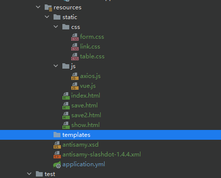
第四步：拷贝之前的controller和entity包到此项目中
第五步：修改配置文件application.yml
291 # 开启debug模式，输出调试信息，常用于检查系统运行状况2 #debug: true3
4 # 设置日志级别，root表示根节点，即整体应用日志级别5logging6 # 日志输出到文件的文件名7 file8 nameserver.log9 # 字符集10 charset11 fileUTF-812 # 分文件13 logback14 rollingpolicy15 #最大文件大小16 max-file-size16KB17 # 文件格式18 file-name-patternlogs/server_log/%dyyyy/MM月/dd日/%i.log19 # 设置日志组20 group21 # 自定义组名，设置当前组中所包含的包22 mao_promao23 level24 rootinfo25 # 为对应组设置日志级别26 mao_prodebug27 # 日志输出格式28# pattern:29 # console: "%d %clr(%p) --- [%16t] %clr(%-40.40c){cyan} : %m %n"
第六步：启动程序
241
2 . ____ _ __ _ _3 /\\ / ___'_ __ _ _(_)_ __ __ _ \ \ \ \4( ( )\___ | '_ | '_| | '_ \/ _` | \ \ \ \5 \\/ ___)| |_)| | | | | || (_| | ) ) ) )6 ' |____| .__|_| |_|_| |_\__, | / / / /7 =========|_|==============|___/=/_/_/_/8 :: Spring Boot :: (v2.7.1)9
102022-10-30 21:39:24.175 INFO 18896 --- [ main] mao.use_starter.UseStarterApplication : Starting UseStarterApplication using Java 16.0.2 on mao with PID 18896 (H:\程序\大四上期\AntiSamy_spring_boot_starter_demo\use-starter\target\classes started by mao in H:\程序\大四上期\AntiSamy_spring_boot_starter_demo)112022-10-30 21:39:24.177 DEBUG 18896 --- [ main] mao.use_starter.UseStarterApplication : Running with Spring Boot v2.7.1, Spring v5.3.21122022-10-30 21:39:24.178 INFO 18896 --- [ main] mao.use_starter.UseStarterApplication : No active profile set, falling back to 1 default profile: "default"132022-10-30 21:39:24.830 INFO 18896 --- [ main] o.s.b.w.embedded.tomcat.TomcatWebServer : Tomcat initialized with port(s): 8080 (http)142022-10-30 21:39:24.842 INFO 18896 --- [ main] o.apache.catalina.core.StandardService : Starting service [Tomcat]152022-10-30 21:39:24.842 INFO 18896 --- [ main] org.apache.catalina.core.StandardEngine : Starting Servlet engine: [Apache Tomcat/9.0.64]162022-10-30 21:39:24.924 INFO 18896 --- [ main] o.a.c.c.C.[Tomcat].[localhost].[/] : Initializing Spring embedded WebApplicationContext172022-10-30 21:39:24.925 INFO 18896 --- [ main] w.s.c.ServletWebServerApplicationContext : Root WebApplicationContext: initialization completed in 709 ms182022-10-30 21:39:24.956 DEBUG 18896 --- [ main] mao.tools_xss.filter.XssFilter : XSS fiter [XSSFilter] init start ...192022-10-30 21:39:24.981 DEBUG 18896 --- [ main] mao.tools_xss.filter.XssFilter : ignorePathList=null202022-10-30 21:39:24.982 DEBUG 18896 --- [ main] mao.tools_xss.filter.XssFilter : ignoreParamValueList=["samlp:LogoutRequest"]212022-10-30 21:39:24.982 DEBUG 18896 --- [ main] mao.tools_xss.filter.XssFilter : XSS fiter [XSSFilter] init end222022-10-30 21:39:25.153 INFO 18896 --- [ main] o.s.b.a.w.s.WelcomePageHandlerMapping : Adding welcome page: class path resource [static/index.html]232022-10-30 21:39:25.264 INFO 18896 --- [ main] o.s.b.w.embedded.tomcat.TomcatWebServer : Tomcat started on port(s): 8080 (http) with context path ''242022-10-30 21:39:25.275 INFO 18896 --- [ main] mao.use_starter.UseStarterApplication : Started UseStarterApplication in 1.427 seconds (JVM running for 2.046)
第七步：访问

1412022-10-30 21:39:45.985 INFO 18896 --- [nio-8080-exec-2] o.s.web.servlet.DispatcherServlet : Completed initialization in 1 ms22022-10-30 21:39:45.989 DEBUG 18896 --- [nio-8080-exec-2] mao.tools_xss.filter.XssFilter : XSS fiter [XSSFilter] starting32022-10-30 21:39:45.989 DEBUG 18896 --- [nio-8080-exec-1] mao.tools_xss.filter.XssFilter : XSS fiter [XSSFilter] starting42022-10-30 21:39:45.990 DEBUG 18896 --- [nio-8080-exec-1] mao.tools_xss.filter.XssFilter : has xssfiter path[/student/init] need XssFilter, go to XssRequestWrapper52022-10-30 21:39:45.990 DEBUG 18896 --- [nio-8080-exec-2] mao.tools_xss.filter.XssFilter : has xssfiter path[/] need XssFilter, go to XssRequestWrapper62022-10-30 21:39:45.999 DEBUG 18896 --- [nio-8080-exec-2] mao.tools_xss.utils.XssUtils : start read XSS configfile [antisamy-slashdot-1.4.4.xml]72022-10-30 21:39:46.002 INFO 18896 --- [nio-8080-exec-1] m.u.controller.StudentController : 初始化完成82022-10-30 21:39:46.007 DEBUG 18896 --- [nio-8080-exec-2] mao.tools_xss.utils.XssUtils : read XSS configfile [antisamy-slashdot-1.4.4.xml] success92022-10-30 21:39:46.007 DEBUG 18896 --- [nio-8080-exec-2] mao.tools_xss.utils.XssUtils : raw value before xssClean: text/html,application/xhtml+xml,application/xml;q=0.9,image/webp,image/apng,*/*;q=0.8,application/signed-exchange;v=b3;q=0.9102022-10-30 21:39:46.016 DEBUG 18896 --- [nio-8080-exec-1] mao.tools_xss.filter.XssFilter : XSS fiter [XSSFilter] stop112022-10-30 21:39:46.028 DEBUG 18896 --- [nio-8080-exec-2] mao.tools_xss.utils.XssUtils : xssfilter value after xssCleantext/html,application/xhtml+xml,application/xml;q=0.9,image/webp,image/apng,*/*;q=0.8,application/signed-exchange;v=b3;q=0.9122022-10-30 21:39:46.034 DEBUG 18896 --- [nio-8080-exec-2] mao.tools_xss.utils.XssUtils : raw value before xssClean: text/html,application/xhtml+xml,application/xml;q=0.9,image/webp,image/apng,*/*;q=0.8,application/signed-exchange;v=b3;q=0.9132022-10-30 21:39:46.035 DEBUG 18896 --- [nio-8080-exec-2] mao.tools_xss.utils.XssUtils : xssfilter value after xssCleantext/html,application/xhtml+xml,application/xml;q=0.9,image/webp,image/apng,*/*;q=0.8,application/signed-exchange;v=b3;q=0.9142022-10-30 21:39:46.038 DEBUG 18896 --- [nio-8080-exec-2] mao.tools_xss.filter.XssFilter : XSS fiter [XSSFilter] stop

1212022-10-30 21:41:38.214 DEBUG 18896 --- [nio-8080-exec-6] mao.tools_xss.filter.XssFilter : XSS fiter [XSSFilter] starting22022-10-30 21:41:38.215 DEBUG 18896 --- [nio-8080-exec-6] mao.tools_xss.filter.XssFilter : has xssfiter path[/student] need XssFilter, go to XssRequestWrapper32022-10-30 21:41:38.233 DEBUG 18896 --- [nio-8080-exec-6] mao.tools_xss.utils.XssUtils : raw value before xssClean: 133<script>alert("xss攻击")</script>42022-10-30 21:41:38.235 DEBUG 18896 --- [nio-8080-exec-6] mao.tools_xss.utils.XssUtils : 出于安全的原因，标记script不被允许。此标记不应该影响输入的显示。52022-10-30 21:41:38.236 DEBUG 18896 --- [nio-8080-exec-6] mao.tools_xss.utils.XssUtils : xssfilter value after xssClean13362022-10-30 21:41:38.240 INFO 18896 --- [nio-8080-exec-6] m.u.controller.StudentController : 添加成功：7id：1118name：1339sex：男10age：811
122022-10-30 21:41:38.242 DEBUG 18896 --- [nio-8080-exec-6] mao.tools_xss.filter.XssFilter : XSS fiter [XSSFilter] stop


1212022-10-30 21:42:45.463 DEBUG 18896 --- [nio-8080-exec-9] mao.tools_xss.filter.XssFilter : XSS fiter [XSSFilter] starting22022-10-30 21:42:45.464 DEBUG 18896 --- [nio-8080-exec-9] mao.tools_xss.filter.XssFilter : has xssfiter path[/student] need XssFilter, go to XssRequestWrapper32022-10-30 21:42:45.465 DEBUG 18896 --- [nio-8080-exec-9] mao.tools_xss.utils.XssUtils : raw value before xssClean: <h1>xss攻击</h1>42022-10-30 21:42:45.467 DEBUG 18896 --- [nio-8080-exec-9] mao.tools_xss.utils.XssUtils : The h1 tag has been encoded for security reasons. The contents of the tag will remain in place.52022-10-30 21:42:45.467 DEBUG 18896 --- [nio-8080-exec-9] mao.tools_xss.utils.XssUtils : xssfilter value after xssClean<h1>xss攻击</h1>62022-10-30 21:42:45.468 INFO 18896 --- [nio-8080-exec-9] m.u.controller.StudentController : 添加成功：7id：1118name：<h1>xss攻击</h1>9sex：男10age：911
122022-10-30 21:42:45.469 DEBUG 18896 --- [nio-8080-exec-9] mao.tools_xss.filter.XssFilter : XSS fiter [XSSFilter] stop

end
by mao
2022 10 30